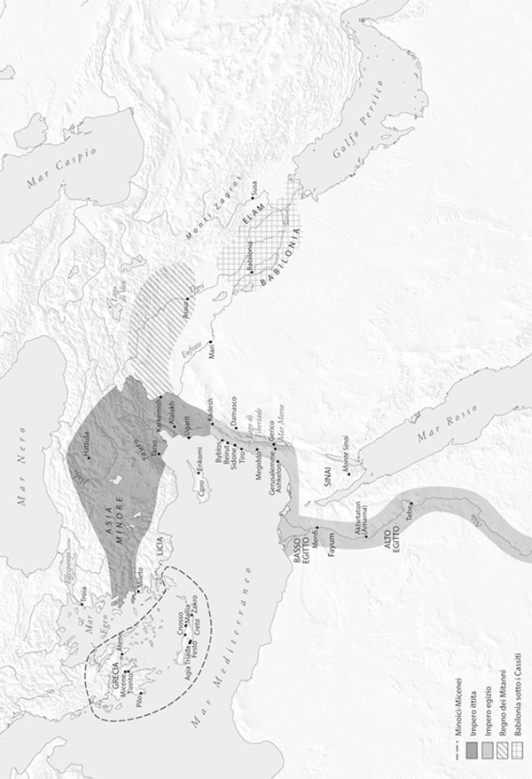

Per molto tempo ho voluto scrivere un libro come questo e quindi i miei ringraziamenti calorosi vanno soprattutto a Rob Tempio, che ha permesso l’attuazione di questo progetto e ha poi contribuito attivamente all’avventura del manoscritto attraverso le consuete vicissitudini e poi verso la sua definitiva forma stampata. È stato molto paziente nell’attesa del manoscritto definitivo, in ritardo rispetto alla scadenza pattuita. Sono felice che questo volume sia stato il primo della collana Turning Point in Ancient History, pubblicata dalla Princeton University Press, sotto la direzione di Barry Strauss e Rob Tempio.
Sono anche debitore del University Facilitating Fund della George Washington University per la sua borsa estiva e devo molto a numerosi amici e colleghi, tra i quali Assaf Yasur-Landau, Israel Finkelstein, David Ussishkin, Mario Liverani, Kevin McGeough, Reinhard Jung, Cemal Pulak, Shirly Ben-Dor Evian, Sarah Parcak, Ellen Morris e Jeffrey Blomster, con cui ho avuto appaganti conversazioni su argomenti appassionanti. Vorrei anche ringraziare Carol Bell, Reinhard Jung, Kevin McGeough, Jana Mynarova, Gareth Roberts, Kim Shelton, Neil Silberman e Assaf Yasur-Landau per aver inviato materiale su richiesta o fornito risposte dettagliate a domande specifiche, e Randy Helm, Louise Hitchcock, Amanda Podany, Barry Strauss, Jim West e due anonimi recensori, che hanno letto e commentato l’intero manoscritto. Grazie anche alla National Geographic Society, l’Oriental Institute dell’Università di Chicago, il Metropolitan Museum of Art e la Egypt Exploration Society, che mi hanno permesso di riprodurre alcune delle illustrazioni che appaiono in questo volume.
Molto del materiale in questo libro rappresenta una sintesi aggiornata e accessibile delle mie ricerche e delle mie pubblicazioni sulle relazioni internazionali della tarda Età del Bronzo, che sono apparse nel corso degli ultimi due decenni, oltre a presentare naturalmente la ricerca e le conclusioni di molti altri studiosi. Sentiti ringraziamenti vanno anche ai redattori e agli editori delle varie riviste e dei volumi editi in cui sono apparsi alcuni dei miei articoli, perché mi hanno permesso di riprodurre qui il materiale già raccolto, sebbene rimaneggiato e aggiornato. Mi riferisco in particolare a David Davidson di Tempus Reparatum/Archaeopress, come pure a Jack Meinhardt e la rivista «Archaelogy Odyssey»; James R. Mathieu e la rivista «Expedition»; Virginia Webb e l’«Annual of the British School at Athens»; Mark Cohen e la CDL Press; Tom Palaima e «Minos»; Robert Laffineur e la collana Aegaeum; Ed White a la Recorded Books/Modern Scholar; Garrett Brown e la National Geographic Society; e Angelo Chianiotis e Mark Chalavas, tra gli altri. Ho fatto ogni possibile tentativo di documentare chiaramente con le note e la bibliografia le pubblicazioni in cui possono trovarsi le discussioni anteriori dei dati presentati nel libro. Qualsiasi frase presa a prestito da altri, sia dalle mie precedenti pubblicazioni sia da quelle di altri studiosi, che sia rimasta non attribuita è del tutto non intenzionale e se necessario sarà rettificata nelle prossime edizioni.
Infine, vorrei ringraziare mia moglie Diane, per le numerose, stimolanti discussioni sui temi trattati in questo libro. Tra i suoi altri contributi, mi ha iniziato al tema dell’analisi dei social network e a quello della teoria della complessità, e ha creato alcune delle immagini qui utilizzate. Vorrei ringraziare sia lei che i nostri figli per la loro pazienza mentre io lavoravo a questo libro. Come sempre, il libro ha tratto vantaggio dal lavoro di editing e dal feedback critico di mio padre, Martin J. Cline.

Figura 1 Mappa delle civiltà della tarda Età del Bronzo nell’Egeo e nel Mediterraneo orientale.